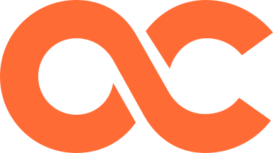
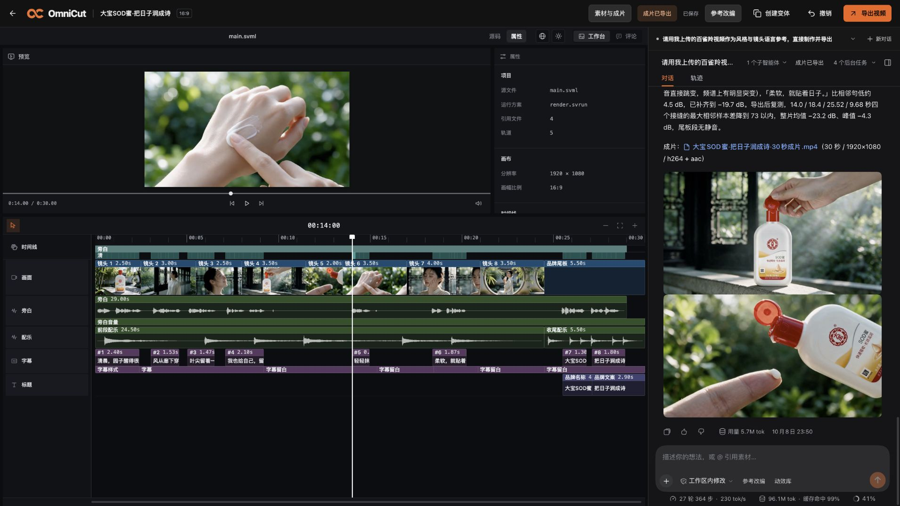
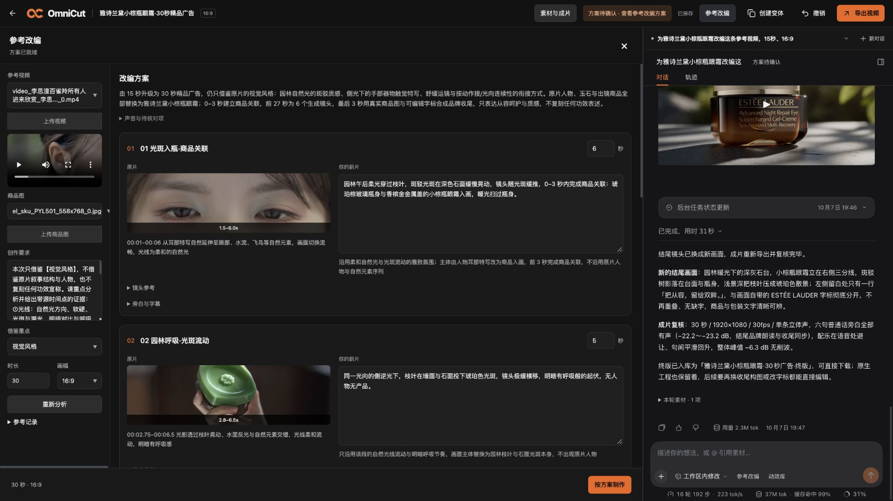
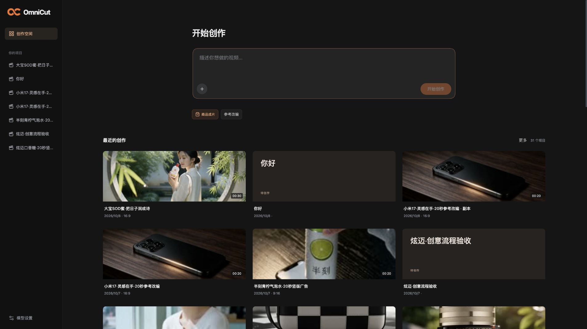

先有一个方向
一句创作要求、一张商品图，或者一条参考视频，都可以作为起点。参考片用来讨论镜头、节奏和感觉，再换成自己的内容。

OmniCut.个人产品作品集 · 视频创作 Agent
有个想法，或者一条喜欢的参考片？
和 Agent 一起拆创意、做素材、剪成片。
不满意的地方，接着改。

先看它实际做出了什么
点击播放，建议打开声音。
均为个人概念样片，非品牌委托或合作。
拿一条喜欢的美妆广告作参考，换成新的商品与表达，再把人物、产品镜头和配音剪到一起。
这些片子用来验证真实制作流程，也会暴露画面、节奏和声画配合的问题。它们是产品迭代的起点。
看看创作是怎么接起来的
从拆一条参考片，到改好一个镜头。
这里是实际使用中的六个页面。

把参考片拆成分镜和时间点，再和 Agent 讨论哪些感觉要保留、哪些内容换成自己的。
从用户的任务出发

一句创作要求、一张商品图，或者一条参考视频，都可以作为起点。参考片用来讨论镜头、节奏和感觉，再换成自己的内容。
图像、视频、配音、配乐和字幕进入同一个项目。Agent 可以调用工具制作，你也可以随时查看画面与时间线。
“这个镜头短一点”“换一句旁白”“尾板别那么满”。用对话继续调整，也能直接动手剪；不必为了改一个地方重新做整条片。
做这个产品时，我更在意什么
我自己用它做过护肤品、快消和消费电子广告。过程中最烦的，往往是生成完的镜头接不上剪辑、进度看不懂，或者声音和字幕各走各的。
所以 OmniCut 的重点，是让人和 Agent 围绕同一份工程工作：已经做好的东西能接着用，不合适的地方能继续改，任务没结束时也别假装已经完成。
目前是持续迭代中的本地原型。画面一致性、中文配音和复杂剪辑仍需要人工挑选与调整，展示样片不代表每次都能得到同样的结果。
源码与实现
视频工程与编辑器基于 Hypit，会话与 Agent 内核基于 DeepSeek Harness。
OmniCut 负责把项目、素材、模型服务和创作流程连起来。